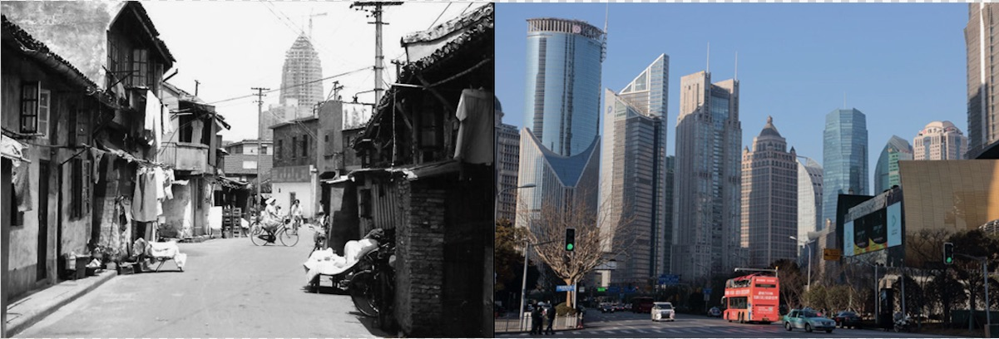

(Picture of Shanghai 1996 vs 2017)
The “rise of China” is an enduring topic of interest for people all around the world. Much of this discussion rightly focuses on the economic rise of China in terms of GDP, or what many Western commentators refer to as the “China shock.” While the economic rise of China has been frequently discussed in aggregate, less attention has been devoted to discussing how that economic rise translates to a higher standard of living for Chinese residents.
One standard metric used to measure the standard of living for a country is the Human Development Index (HDI). The HDI is calculated via a geometric mean of life expectancy, years of schooling, and gross national income per capita. China is the first country to successfully progress from low to high human development, and is on the cusp of becoming the first country to traverse all four stages of human development, from low to very high.
So how did China develop so rapidly?
(Picture of Mao declaring the founding of the PRC)
“Ours will no longer be a nation subject to insult and humiliation. We have stood up.”
— Mao Zedong (毛泽东）
The Communist victory in the Chinese Civil War and the establishment of the People’s Republic of China (PRC) marked the end of China’s Century of Humiliation.
The Communist Party of China (CPC) had a massive task in front of them. In 1949, more than 80 per cent of China's population was illiterate, 20 percent of Shanghai residents were addicted to opium (Meisner, 1986), and China’s gross domestic product (GDP) stood at a mere US$60 per capita (in 1990 dollars), a figure that represented only about half of the average across Asian nations.
During the Mao era, comprehensive education, land, and healthcare reforms, helped China to rapidly reduce illiteracy, and in fact, between 1950 and 1980, China experienced the most rapid sustained increase in life expectancy of any population in documented global history.
While there were some setbacks, such as a massive famine during the Great Leap Forward from 1958-1962 (O Grada, 2009), the CPC learned from its mistakes. In fact, the Great Leap Forward represented the last famine in Chinese history, a remarkabl feat given how famines were a regular occurrence throughout Chinese history. (O Grada, 2009)
These massive improvements in health outcomes, education, and overall standard of living laid the groundwork for future economic growth, paving the way for China’s massive poverty reduction in subsequent decades.
(Shenzhen 1980 vs 2025)
“To build socialism it is necessary to develop the productive forces. Poverty is not socialism. To uphold socialism, a socialism that is to be superior to capitalism, it is imperative first and foremost to eliminate poverty.”
— Deng Xiaoping （邓小平）
Towards the end of the Mao era, China found itself in the midst of much turmoil, especially during the Cultural Revolution. The “Gang of Four” gained strong influence and pulled the country in a strong leftward direction, declaring that “it was better to be poor under socialism than to be rich under capitalism.”
However, the Gang of Four proved to be quite unpopular, paving the way for Deng Xiaoping to eventually become China’s paramount leader. It was in this context that the impetus for China’s Reform and Opening Up came into being.
Deng correctly identified that the excesses of the Cultural Revolution led to stagnation in China’s growth. The primary contradiction in Chinese society was the need for China to develop the productive forces, and so, to encourage innovation, Deng introduced market reforms. These reforms led to the birth of Socialism with Chinese Characteristics, and later, a socialist market economy.
What followed was the greatest poverty reduction campaign in world history, lifting 800 million people from poverty.
What drove this successful poverty reduction campaign? According to the World Bank, China's growth in agricultural incomes was initially the main driving force behind poverty reduction. Rapidly rising productivity and wages in non-agricultural sectors proved important in the 1990s and 2000s. Targeted poverty alleviation efforts by the government in the 2010s meanwhile proved vital for eliminating poverty towards the end of this period.
(Future visualization - Flying car)
"Scientific and technological innovation can generate new industries, new models, and new growth drivers, which are the core elements of the development of new quality productive forces... We must accelerate the development of new quality productive forces and solidly promote high-quality development."
— Xi Jinping （习近平）
What lies ahead for China? Whether that be building the world’s largest high-speed rail network, the release of competitive AI models like DeepSeek, or China’s dominance in green energy, it’s clear that China is ushering in a new era of high-tech development.
While no one knows where China’s development will go from here, one thing is for certain. China’s development will continue to change world history, ushering in an era of fascination and intrigue.